Merchant POS Collection Function User Guide
The merchant POS collection function allows cooperative merchants in the scenic area to directly collect payments from tourists through handheld POS machines, which is especially suitable for scenes that require on-site payment such as leasing, catering, and retail. This document will guide you through the entire process of background configuration and device-side operations.
Warning: Before using this function, please be sure to read and understand the background configuration part of this document completely. Incorrect configuration will cause the device to be unusable or cause accounting errors.
Part 1: Background Configuration
Before using the POS machine for collection, you must first create a merchant and corresponding operator account in the background.
1. Merchant Management
Find Merchant Collection -> Merchant Management in the left navigation menu of the background to enter the merchant management page. All operations such as querying, creating, modifying, and enabling/disabling merchants are performed on this page.
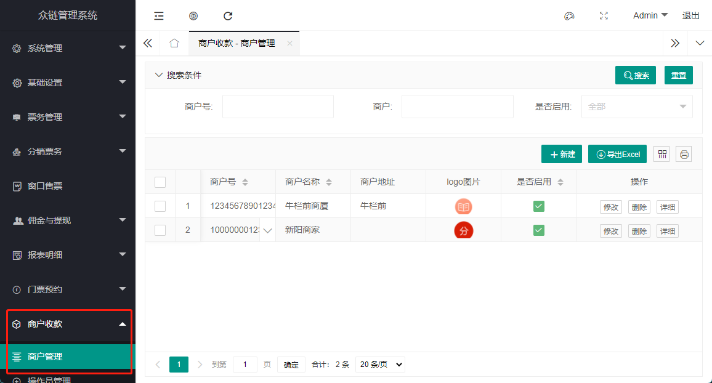
New Merchant: Click the "New" button, fill in the merchant information in the pop-up window and submit.
**Note:** The "Merchant Number" must be unique in the system and cannot be modified once created.
Edit Merchant: Click the "Modify" button in the list to update the merchant's name, logo, introduction, and enable/disable status. 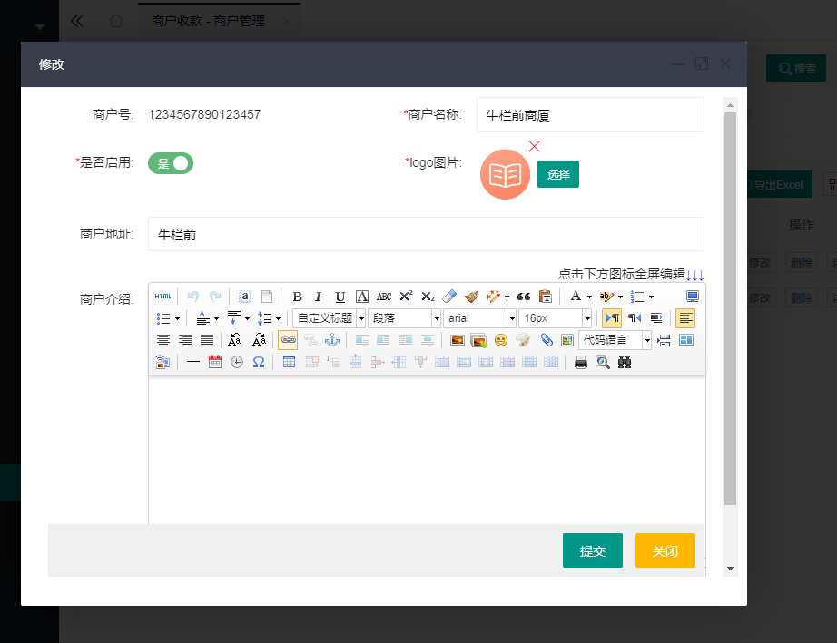
2. Operator Management
A merchant must be associated with at least one operator account to log in and use it on the POS machine.
Prerequisites for creating an operator:
- You must first create a dedicated role for the merchant operator. For the steps to create a role, please refer to the Background Operation Manual.
- The created merchant operator role, its "Role Number" must start with
9900, otherwise it is invalid. 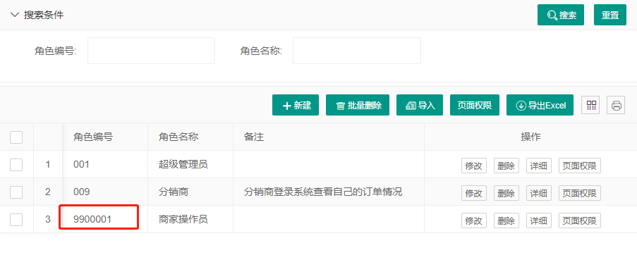
Create Operator: Click "New" on the "Operator Management" page, enter the account number, password, name, and specify the correct role and affiliated merchant for it.

Modify Operator: You can modify the basic information of the operator. If you need to reset the password, please use the "Modify Password" function.

3. Financial Management
Collection Records: You can view and export the details of all collections completed through the POS machine. This record cannot be modified. 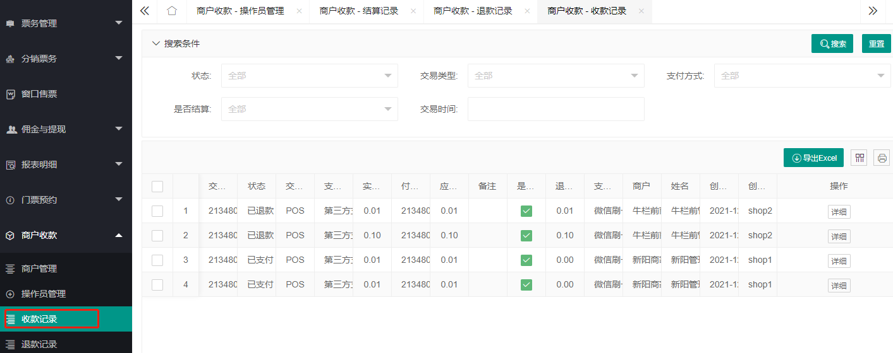
Refund Records: Refunds can be initiated in the background or on the handheld machine. To refund in the background, you need to click "New" on this page and enter the original transaction number and refund amount.
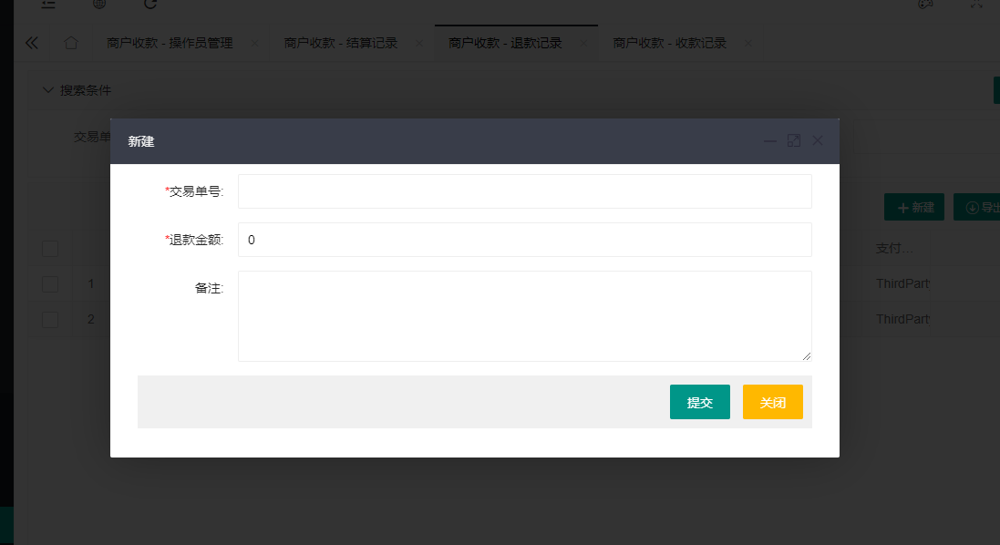**Refund restrictions:** The refund amount cannot be greater than the original order amount, and usually only supports refunds for transactions on the same day.Settlement Records: The system will automatically generate a transaction settlement sheet for the previous day in the early morning of each day. After the financial staff checks that it is correct, they can perform the "Confirm" operation on this page. 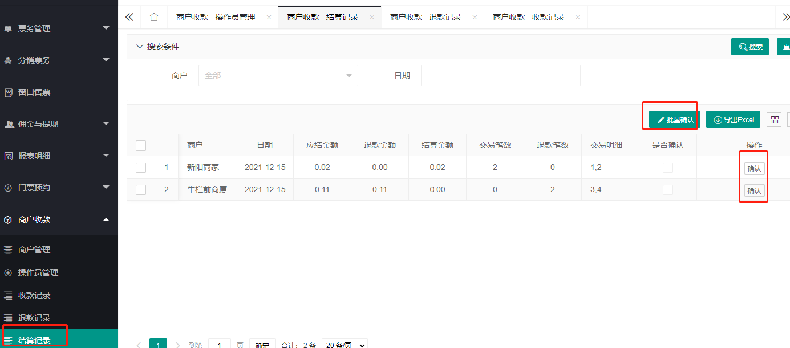
Part 2: Handheld POS Machine Operation
1. Installation and Initial Configuration
Install App:
Currently, the App is mainly adapted to handheld machines such as **N86, P1000, P2000**. It may not be used normally on unadapted devices. Please contact our staff to obtain the App installation package.Set server address:
- Open the App and click the gear icon in the upper right corner of the login page.
- In the pop-up dialog box, enter your background server URL address (note that there is no
/at the end). 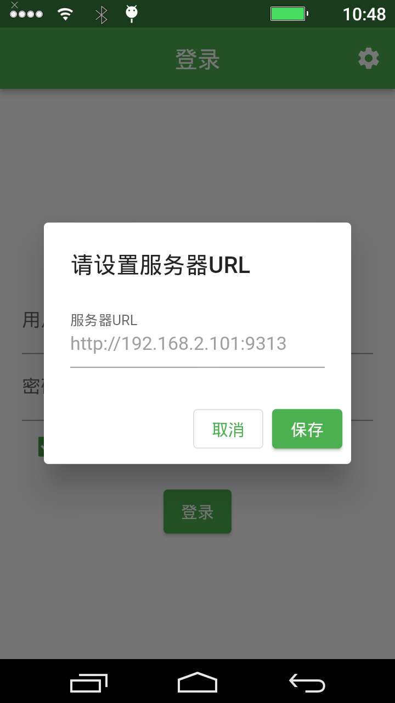
2. Daily Operations
Use the operator account and password created in the background to log in to the POS machine. 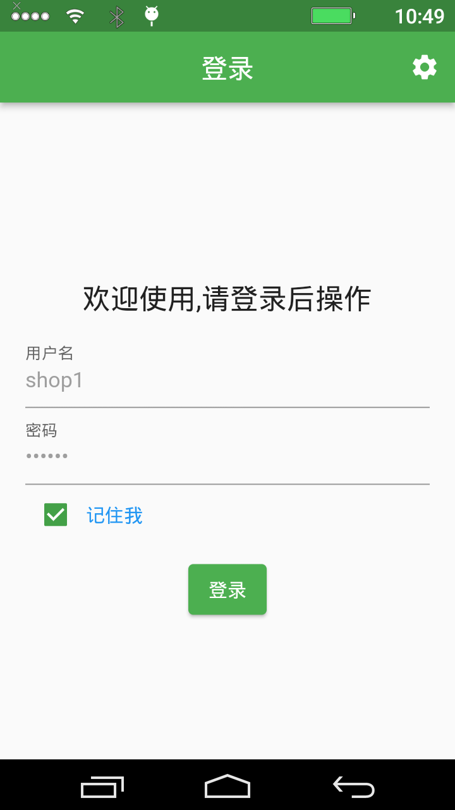
The main interface after logging in is as follows, including core functions such as collection, refund, and record query. 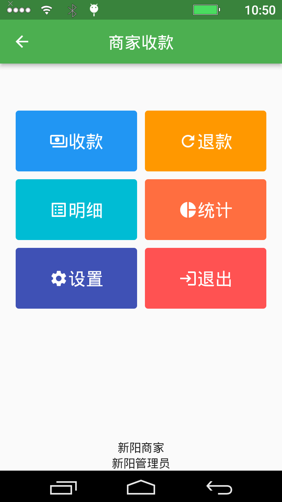
Collection: Enter the amount on the "Collection" page, and after clicking OK, a unified payment QR code will be generated for customers to scan and pay. 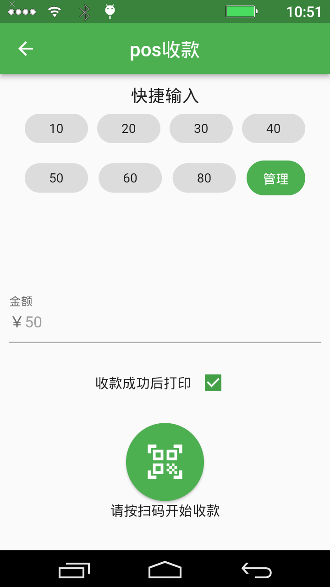
Refund: On the "Refund" page, you usually need to enter or scan the voucher number of the original order to initiate the refund process. 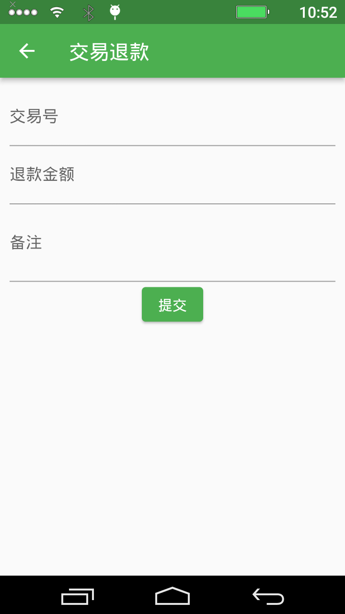
Record query: You can directly view the local "Collection Records" and "Refund Records" on the device.
 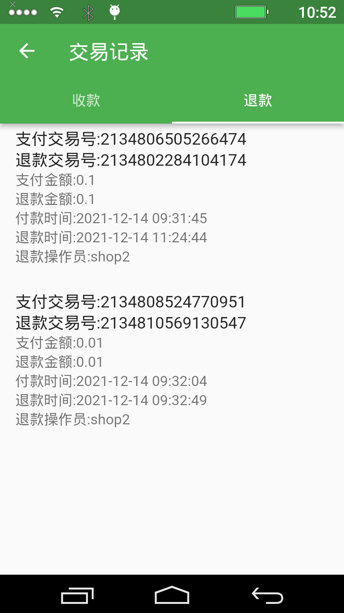
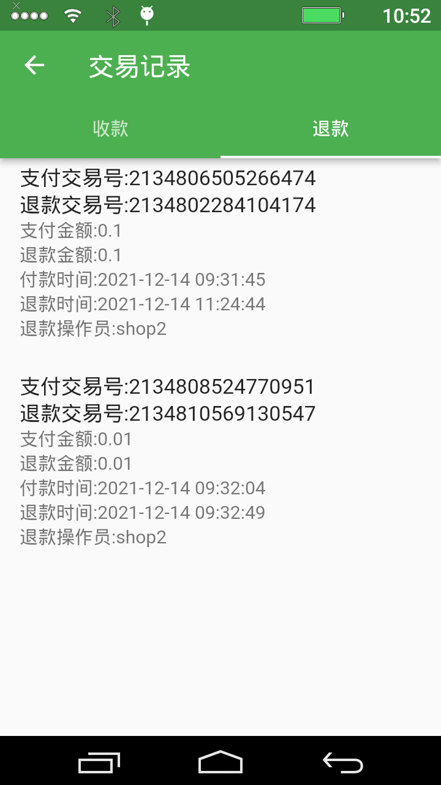Statistics: View the sales statistics summary data of the machine on the day.

Settings: Provide some localized settings, such as printer parameters, sound reminders, etc. 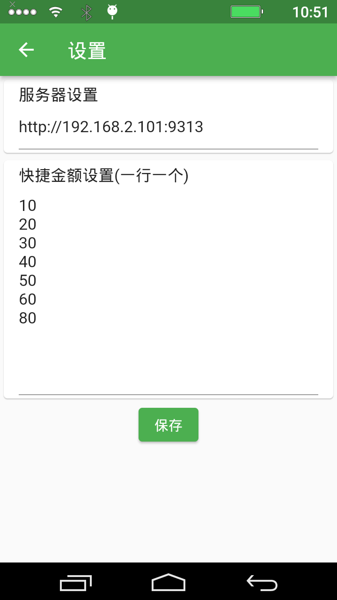